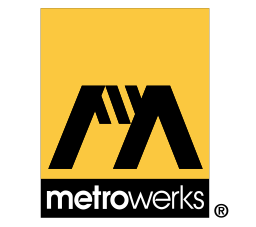
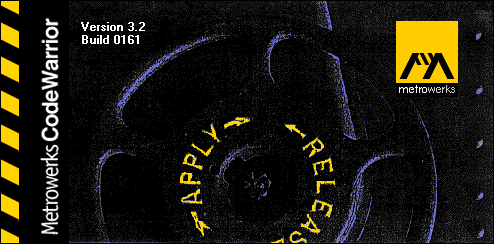

The black sheep of the N64 SDKs, this one was barely used and completely dead in modern usage.
But I'm still gonna write about it anyway
What's here
- History
- - Historical context (OR: "Why is this a thing")
- Getting started
- - How easy it is to get everything working
- Porting
- - How easy it is to move over existing projects
- Review
- - My final thoughts on overall SDK quality
